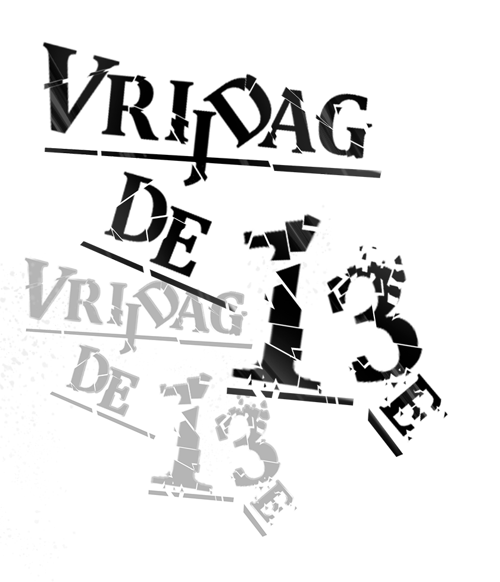
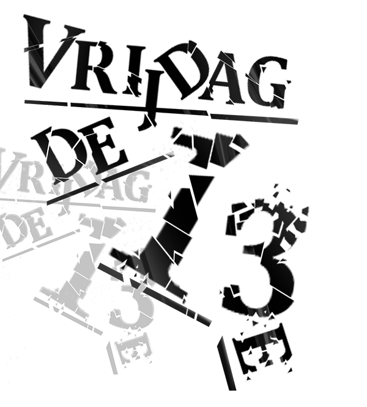
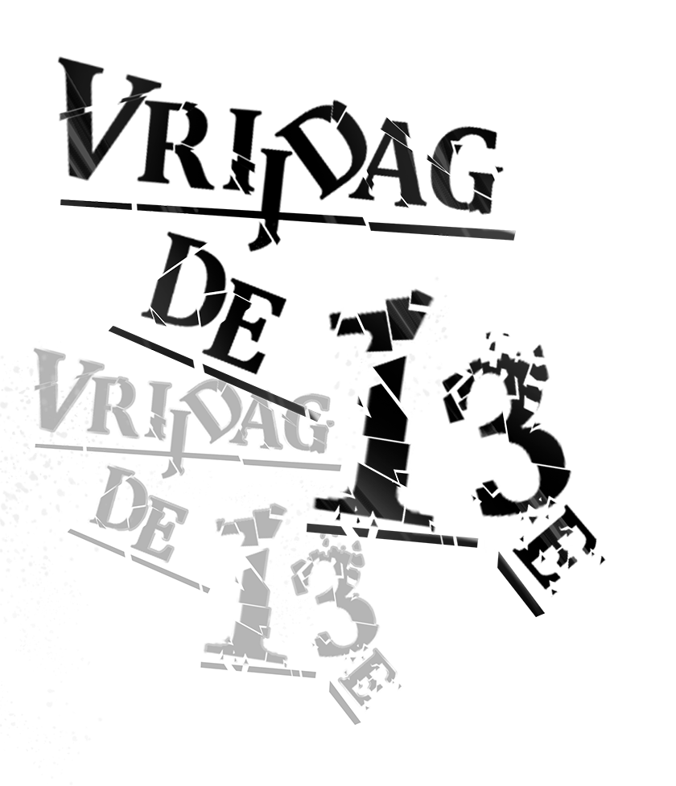
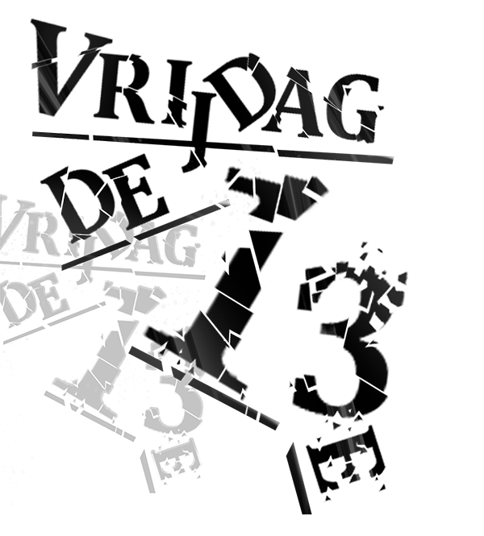

Vrijdag de 13e
 



Bij het uitstappen van de bus waait mijn jas open, precies op het moment dat de buschauffeur de deuren sluit. Terwijl ik de kinderwagen waarin mijn zoon ligt te krijsen vasthoudt, ren ik mee met de bus en schreeuw ik naar de buschauffeur dat hij moet stoppen. Maar hij hoort me niet, de bus draait de bocht om en ik scheur uit mijn jas. Met een halve jas trotseer ik een venijnig windje en een gemene miezerregen. De mensen kijken naar beneden, kop in de kraag. Ik kijk fier vooruit, meen te ruiken dat mijn zoon heeft gepoept, kom met mijn schoen in de tramrails vast te zitten en verzwik mijn rechtervoet. Ik strompel door. Op naar de Openbare Bibliotheek om Stijloefeningen van Raymond Queneau te lenen. Ben ik al een week of wat naar op zoek, maar het is nergens te vinden. Wat een chaos is het hier trouwens rond Centraal Station! Overal modderige bouwputten. Een windvlaag tilt mijn hoed op en brengt ’m naar beneden waar hij in het natte cement van een fundering blijft liggen.
Voor de bibliotheek glij ik uit over een bananenschil en val midden in een modderige regenplas. Mijn zoon jankt nog steeds, zij het niet meer zo hard. Ik lig oog en oog met twee afgetrapte schoenen van het merk Paladium. Mijn blik gaat omhoog via twee benen, een beige regenjas naar het hoofd van een vrouw met woeste zwarte krullen. Ze vraagt in het Engels met een Frans accent of dit het postkantoor is. Lang geleden stond hier inderdaad een postkantoor. Ik sta op, klop zo goed en zo kwaad als het gaat de modder van mijn kleren en vertel de vrouw dat ze aan het verkeerde adres is. Uit een vilten schoudertas met een beeltenis van Le Chat Noir haalt ze een briefje. Als ik het briefje wil pakken neemt de wind het mee. De vrouw en ik, we volgen het briefje. De blik van de vrouw blijft hangen bij een oude Renault 21 met een Frans nummerbord die achteruit rijdend van ons weg rijdt en een knalpot verliest. Ze kijkt me verontschuldigend aan. Ik zeg dat ze het beste naar de Raadhuisstraat kan gaan. Ik weet niet of ze me hoort, want ze rent weg achter de auto aan, die nu ook een voorbumper verliest.
Binnen zoek ik bij de Q van Queneau. Mijn zoon heeft zijn gebruikelijke volume weer gevonden en jankt de hele bibliotheek bij elkaar. Ik probeer het te negeren. Er zijn een hoop van z’n titels aanwezig, maar net Stijloefeningen niet. Zul je altijd zien. Ik kijk voor de vorm nog even bij de R en de P, in de hoop dat iemand ’m per ongeluk daar heeft neergezet, maar niks. Ik ga naar de computer. Het netwerk ligt eruit. Een kleine tien minuten later doet het netwerk het weer. Volgens de online catalogus van de Openbare Bibliotheek is Stijloefeningen wel degelijk aanwezig. En ligt het op de daartoe bestemde plek. Met deze informatie ga ik naar een medewerker. Bij het opstaan blijft de naad van mijn spijkerbroek achter een loszittende schroef van de computertafel hangen, met als gevolg dat ik nu ook uit mijn broek scheur. Met een halve jas en een halve broek vertel ik de medewerker mijn bevindingen. Hij wil wel mee zoeken en loopt via de tenen van mijn reeds verzwikte rechtervoet naar de Q van Queneau. Uiteraard vindt hij ook niks. Hij zegt dat ik een mailtje moet sturen naar het magazijn, die hebben nog wel een exemplaar. Ik wil naar de computers lopen, draai me om, knal met m’n kop tegen een boekenkast en krijg het complete oeuvre van Harry Mulisch, inclusief vier exemplaren van De Ontdekking van de Hemel, op m’n kop. Heel even lacht mijn zoon en dan gaat ie weer verder met huilen. Ik stuur een mail, moet een half uur wachten omdat het netwerk er weer uit ligt en krijg dan een mail terug waarin staat dat Stijloefeningen van Qeuneau gewoon op de daartoe bestemde plek ligt. Waar ik dus al een halve dag sta te kijken.
In een babywinkel op het Bos en Lommerplein koopt een vrouw de laatste schoentjes die ik voor mijn zoon wilde kopen. Bij het naar buiten gaan glij ik uit over een hondendrol. Mijn zoon is stil, volgens mij slaapt ie.